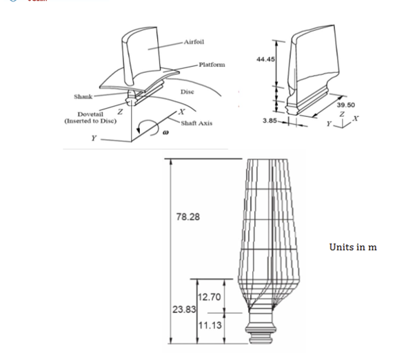
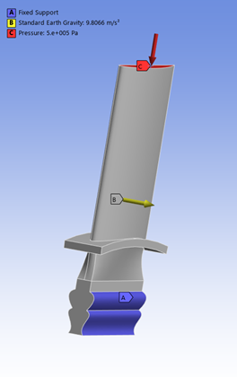
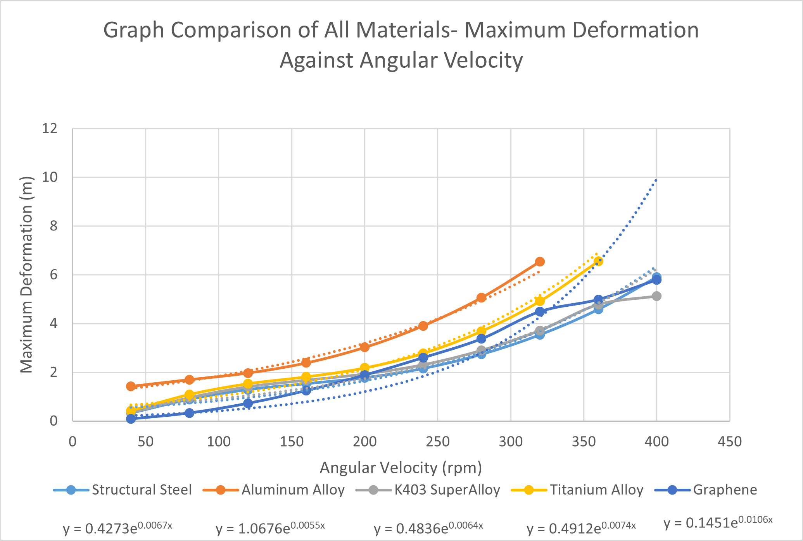
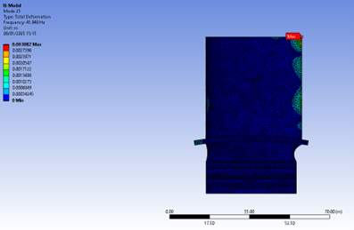
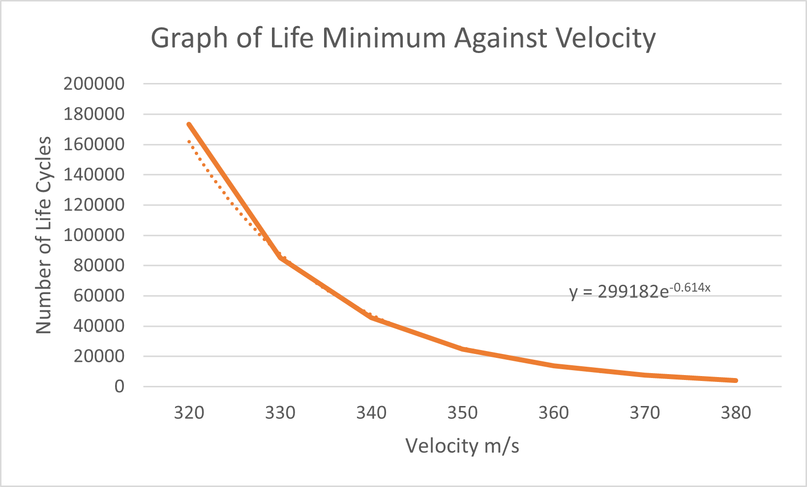
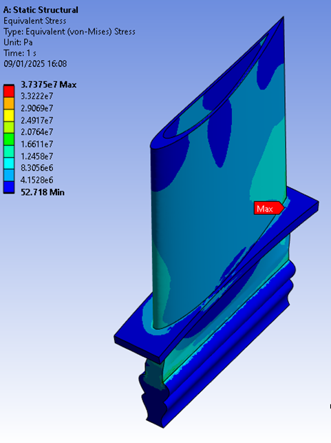

Turbine Blade Aeromechanics Analysis
A simulation-led aeromechanics project analysing the structural behaviour of a turbine blade under rotational, modal, and fatigue loading. The work included model verification, material comparison, modal analysis, high-cycle fatigue assessment, and design optimisation to reduce blade stress.
Project Overview
The project investigated how turbine blade geometry, material choice, mesh quality, and boundary conditions influence structural performance. A CAD model of an aerofoil-style turbine blade was tested through several simulation stages to assess deformation, stress, strain, modal response, and fatigue behaviour.
Objective
The objective was to use engineering simulation to evaluate turbine blade performance and improve the design. The study aimed to balance accuracy and computation time, compare candidate materials, identify potential resonance conditions, assess fatigue limits, and reduce stress through design changes.

Simulation Workflow
- Created/imported a turbine blade CAD model using aerofoil coordinate data.
- Performed a mesh study to select a practical mesh size for further simulations.
- Validated simulated rotational stress against a theoretical stress calculation.
- Applied fixed supports at the dovetail and rotational velocity loading across the blade.
- Compared material behaviour for structural steel, aluminium alloy, K403 superalloy, titanium alloy, and graphene.
- Performed modal analysis using K403 superalloy with gravity and a pressure load applied.
- Carried out high-cycle fatigue analysis using K403 superalloy and an S-N curve generated from Basquin's equation.
- Tested design optimisation concepts including twist, fillets, hollowing, serrated ends, and holes near the blade tip.

Mesh Verification
A mesh independence study was used to balance accuracy and computational cost. Due to the large scale of the turbine blade model, the tested mesh sizes were also large. Reducing the mesh element size from 0.4 m to 0.2 m only improved deformation accuracy by approximately 0.086%, while computation time increased by over 600%. Based on this trade-off, the 0.4 m mesh size was selected as the practical mesh setup for further simulations.
Material Comparison
Material load testing compared stress, strain, and deformation behaviour over the stable tested rotational range. K403 superalloy was selected for the later modal and fatigue studies because it gave a strong stiffness response in the simulation comparison, while aluminium alloy showed less favourable performance.

Modal Analysis
Modal testing identified the modes with the highest deformation response. The most critical results occurred around modes 21 to 25, with Mode 23 producing the highest deformation of 0.003082 m at 41.948 Hz. The highest deformations were concentrated around the trailing edge, likely due to the thinner geometry in that region.

High-Cycle Fatigue
High-cycle fatigue analysis was performed for K403 superalloy across a simulation velocity sweep from 320 m/s to 380 m/s. The results showed that fatigue life decreased sharply as velocity increased, while damage accumulation rose and the stress safety factor reduced. These values are presented as simulation loading conditions rather than claimed real-world wind turbine operating speeds.
Design Optimisation
Several geometry changes were tested to reduce blade stress. The hollow blade design achieved the largest improvement, reducing stress by 42.96% compared with the original design. Filleted joints were the second strongest option, reducing stress by 32.54% by lowering stress concentration at connection regions.


Key Results
- 0.4 m mesh size selected due to strong accuracy-to-time balance for the large turbine blade model.
- K403 superalloy was selected for modal and fatigue analysis after the material comparison.
- Aluminium alloy showed the least favourable performance in the material comparison.
- Mode 23 had the highest modal deformation: 0.003082 m at 41.948 Hz.
- Trailing-edge deformation was the main modal concern due to thin blade geometry.
- Hollow blade design reduced stress by 42.96%, from approximately 65.52 MPa to 37.38 MPa.
- Filleted joints reduced stress by 32.54%, from approximately 65.52 MPa to 44.20 MPa.
Skills Demonstrated
- Finite element analysis and simulation setup.
- Mesh verification and simulation efficiency evaluation.
- Material comparison using stress, strain, and deformation outputs.
- Modal analysis and interpretation of deformation modes.
- High-cycle fatigue assessment using S-N curve data and Basquin's equation.
- Design optimisation through geometry changes and result comparison.
- Engineering judgement when simulation limits required practical test conditions.
Reflection
This project strengthened my understanding of aeromechanics simulation and the importance of validating a model before using it for design decisions. The mesh study was especially useful because it showed that a more refined mesh does not always justify the extra computation time, particularly on a large turbine blade model where simulation cost increases quickly.
The project also showed how material choice, boundary conditions, fatigue behaviour, and geometry changes all influence turbine blade performance. The modal analysis highlighted the trailing edge as a sensitive region because of its thinner geometry, while the fatigue study showed how increasing loading conditions can rapidly reduce life and safety factor.
The strongest design outcome was the hollow blade concept, which demonstrated how a targeted geometry change can significantly reduce stress within the simulated test setup while maintaining the intended blade form. Overall, this project helped me connect structural analysis, aeromechanics, fatigue assessment, and design optimisation into a more complete engineering decision-making process.